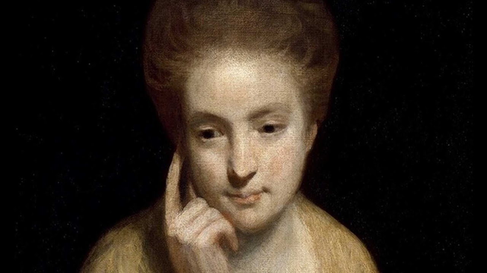
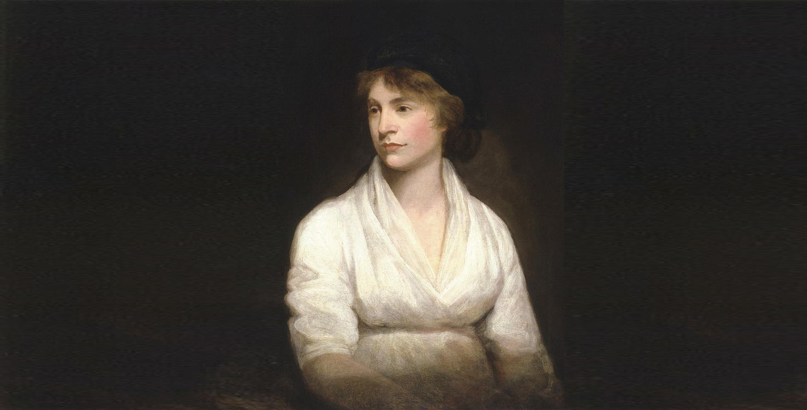
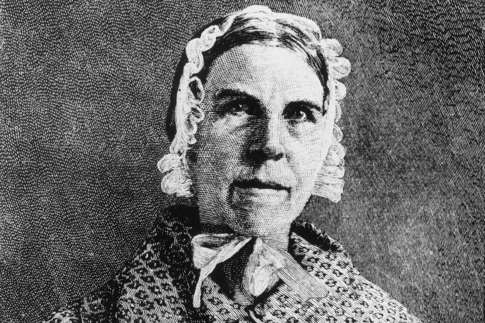
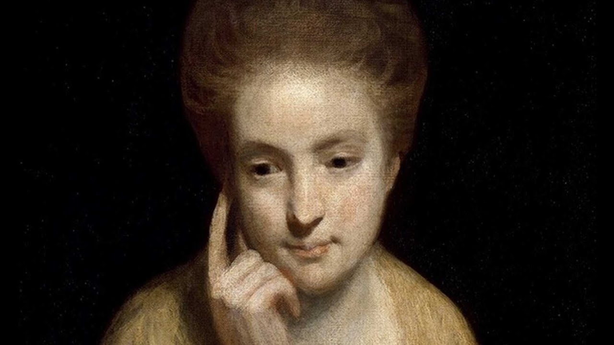
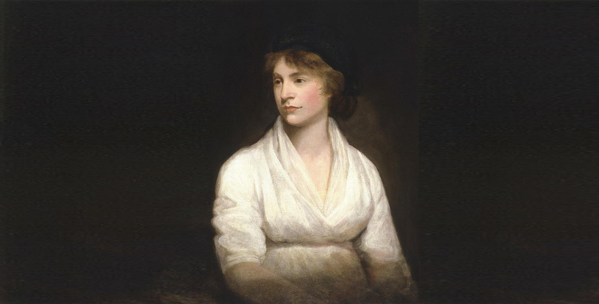
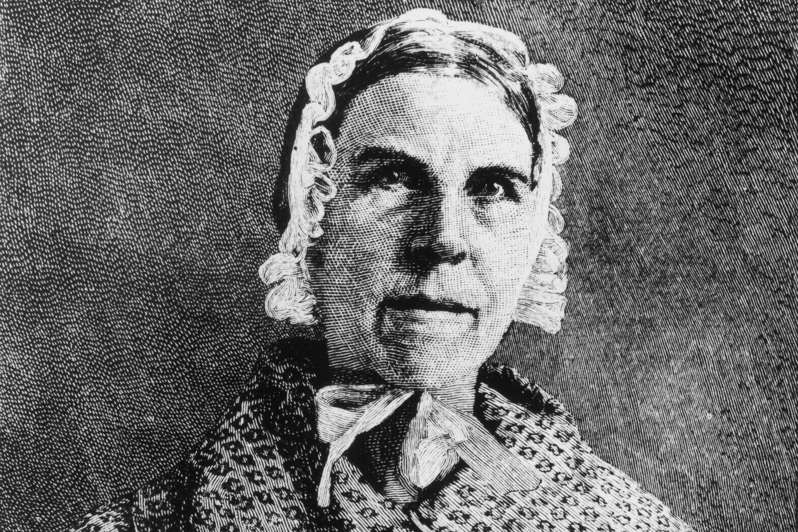
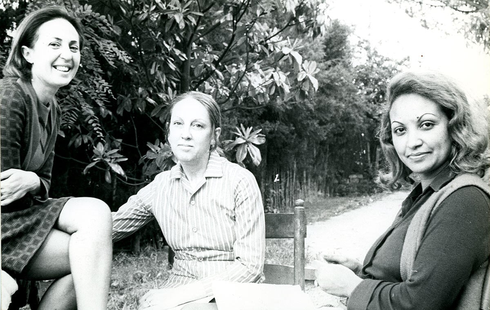
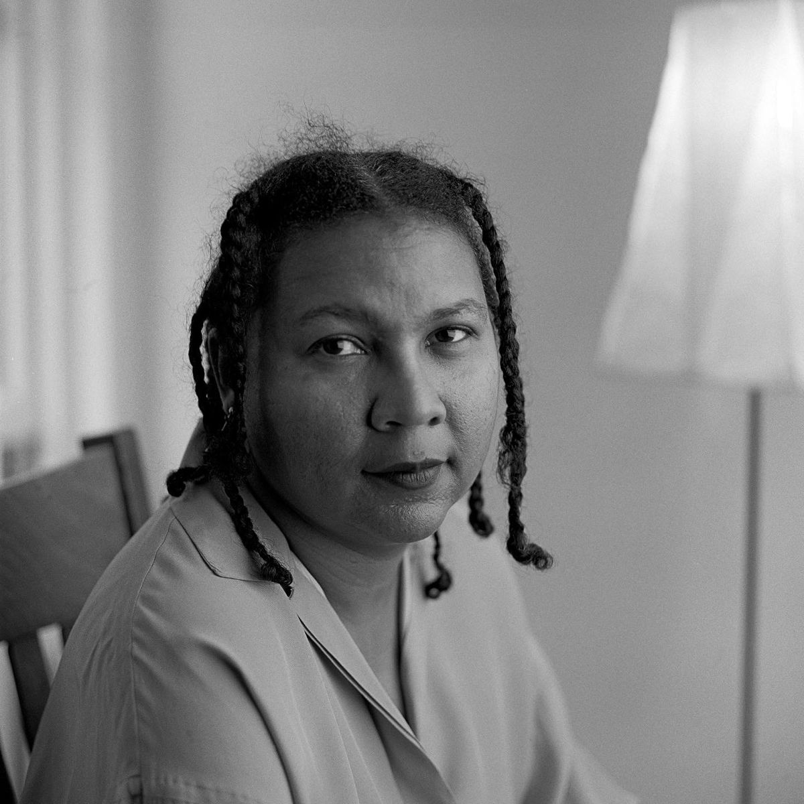
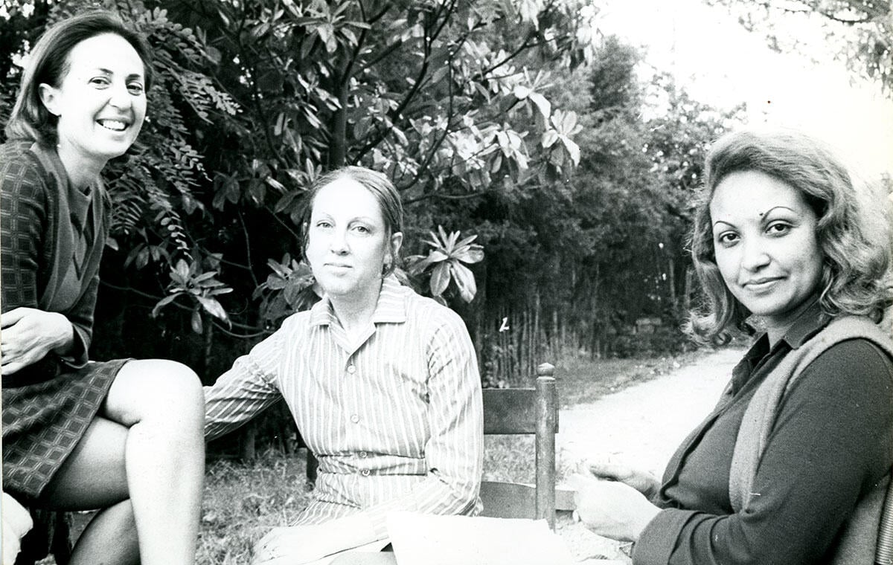
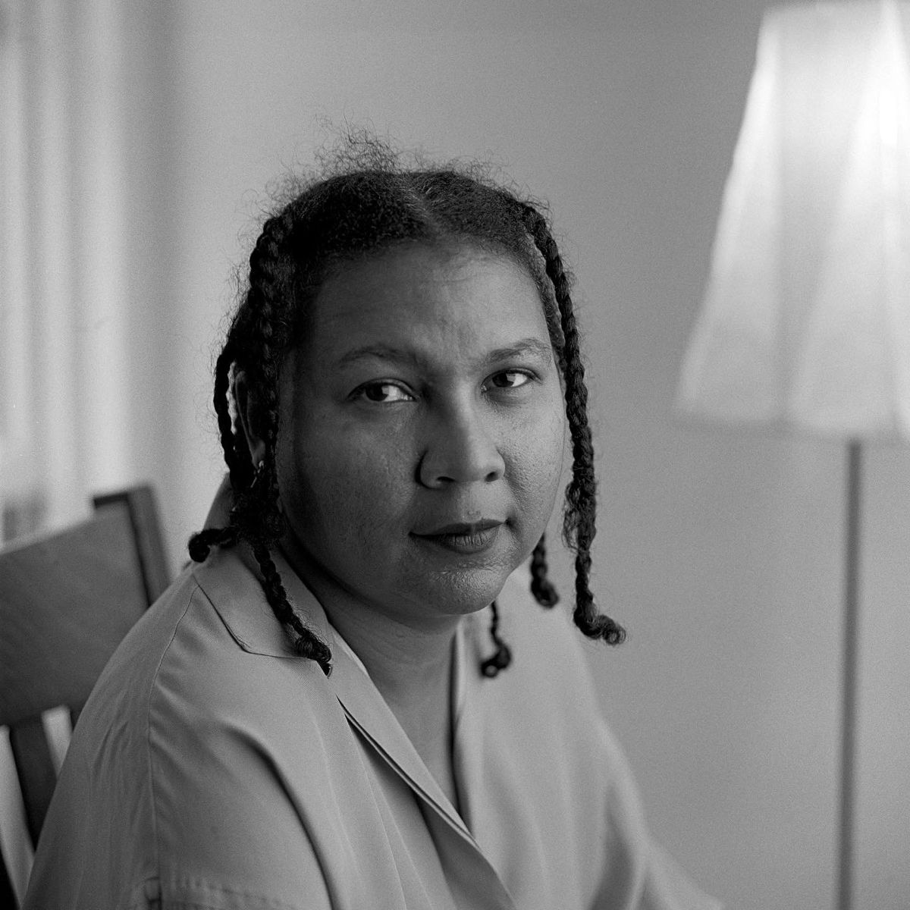

C. Pizan
Le Livre de la Mutacion de Fortune
Le Livre de la Cité des Dames
Le Livre de Fais d'Armes et de Chevallerie
M. Cavendish
World's Olio
Bell in Campo
The Blazing World
M. Astell
A Serious Proposal to the Ladies, pt. I. and II
Letters Concerning the Love of God
Some Reflections upon Marriage
M. Wollstonecraft
Thoughts on the Education of Daughters
A Historical and Moral View of the French Revolution
S. Grimké
An Epistle to the Clergy of the Southern States
Letters on the Equality of the Sexes
American Slavery as It is
A. J. Cooper
A Voice from the South
A Negro Woman cannot be a Lady
E. Goldman
Anarchism and Other Essays
Living My Life
C. Lonzi
Autoritratto
La donna vaginale e la donna clitoridea
Taci anzi parla

 





 


